注意：为了方便统一，本文中出现的安装包依赖的方式均使用
yarn来安装
采取最简便的方式
如果说搭建一个 react template 最简便的方式，那便是使用官方的 cli，即 create-react-app，因为这边还需要使用 typescript 技术栈，所以在搭建的过程中可以加一个参数 --template typescript，表示使用的模板是 typescript 的模板
yarn create react-app my-app --template typescript |
然后在项目的目录中执行如下的命令安装依赖
yarn add typescript @types/node @types/react @types/react-dom @types/jest |
然后生成的目录结构基本上如下所示
# my-app |
其中比较重要的就是 src 以及 tsconfig.json 文件，一个用来存放源码，一个用来定义 tsconfig.json 文件。但这两个文件并不是在最开始搭建的时候一个大障碍，一个比较大的障碍是，使用 cra 创建的项目，如果以后项目的需求变更，就必须使用 config-overide.js 去做一个覆盖原本默认 webpack 配置的配置文件。同时你还需要下载 react-app-rewired 这个库来重新构建整个项目。考虑到 react-app-rewired 社区中维护的插件/包/库都不是特别的多，并且使用这种过度包装的 package 也比较黑盒，难于调试，所以最后决定使用 yarn eject 抛出该项目的 webpack 配置，手动实现真正自定义的配置和其他的操作(做注释以及方便后面的维护)
yarn eject
执行 yarn eject 之后，基本上就多了两个文件夹 scripts 以及 config
# scripts |
其中的 build.js、start.js、test.js 分别对应 package.json 文件中的 scripts 脚本
// package.json |
道理我都明白，start 对应启动一个本地的 devServer 进行调试，而 build 对应打包最终的文件，test 对应代码的测试脚本，但是你特么的为啥要引入这么多个包啊？全部都是函数套函数的形式，你这谁看的懂啊？
# config |
还有这个所谓的 eject 出来的 webpack 的配置，粗略看了下核心文件 webpack.config.js 中光是配置文件的行数就有 670 行，尽管中间参杂了各种英文的注释，但是对于一个需要配置的新人来说，还是过于繁杂了，光是看到它引入的各种插件也是头疼无比，其实到这个时候，就已经有不详的预感了(对于如此复杂的一个配置，任何修改和添加或者删除都将是灾难性的)
sass-loader 的 bug
因为在之前的 xp 项目中(比如 xp-homework)，可以通过 .env 中的环境变量给一个 scss 变量赋值并追加到某个定义好的 scss 文件中，在 xp-homework 项目中的 vue.config.js 有这样的代码
module.exports = { |
参考 webpack 中有关 sassloader prependData 属性的文档，里面的解释如下
Prepends Sass/SCSS code before the actual entry file. In this case, the sass-loader will not override the data option but just append the entry’s content.
This is especially useful when some of your Sass variables depend on the environment
以及里面的函数配置的写法
{ |
将项目中的 webpack.config.js 中如下的代码
... |
改写成
if (preProcessor) { |
使用 yarn start 后报如下的错误
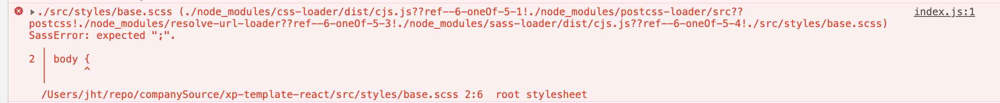
就非常的奇怪，一个比较 trick 的解决方式是，将所有需要引入到 .scss 文件的地方，都改为 .sass，并将其语法也改写成 sass 语法。编译通过。不过这并不是一个好的解决方式，因为定位的问题应该是 sass-loader，可能还有其他的配置，于是去 github 上找了 sass-loader 的相关配置，找到了这么一段话
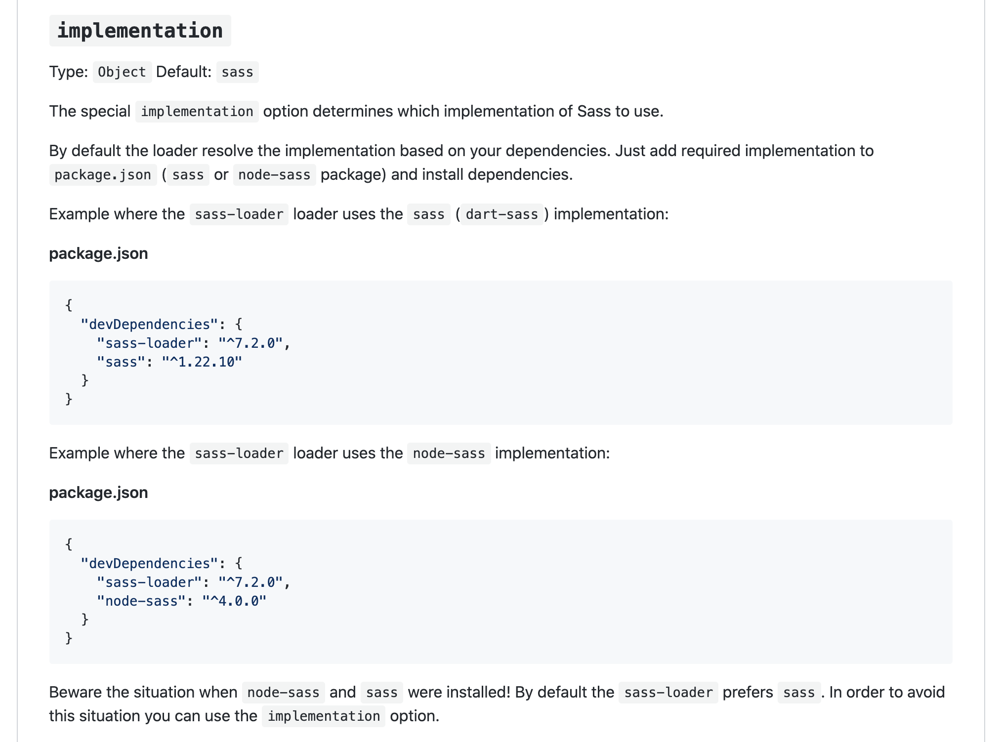
但是看了下，项目中其实是安装了 sass 的，按照道理来说应该会自动使用 sass 来 implementation 才对，但是这里又报错，于是尝试去掉 sass，直接安装 node-sass，问题居然解决了!!!所以如果以后需要用到 sass-loader 的地方，最好还是先安装 node-sass 比较稳妥
路径 alias 引入失败
之前在搭建模板的过程中，只是在 tsconfig.json 文件中设置了 baseUrl 以及 paths
{ |
如果是在 webpack 中不做设置，那么在编译时 webpack 会报错，所以在该项目中的 webpack.config.js 中也需要做 alias 的配置
alias: { |
但是设置完后编译，typescript 表示依然找不到模块，这个时候就是 tsconfig.json 配置的问题了。如果你的 baseUrl 中已经写了 ./src，那么 paths 应该这么写
{ |
@/* 表示匹配代码中的以 @/xxx/yyy 这种形式引入模块，由于已经设置了 baseUrl，所以这里 paths 中的配置就自动加上了 baseUrl了。比如引入一个包 import XXX from '@/xxx/yyy'，而你的配置为 "@/*": ["."] 的话，它会自动在 ./src/xxx/yyy 下去寻找这个模块。另外为了保持格式，我将对应的 webpack 的 alias 以及 tsconfig 的 alias 都做了一一对应，如下
// webpack.config.js |
// tsconfig.json |
引入 svg 报错
虽然现在能够以 img 标签 src 方式引入 svg，如下
import React from 'react |
但是我们更希望能将 svg 当成一个组件的方式引入，如下
import React from 'react |
最开始是参考 Adding SVGs 这篇文章，它的解决方案如下
import { ReactComponent as Logo } from './logo.svg'; |
试了下发现是不行的，然后继续搜集线索，发现有个 babel 的插件可以解决这个问题，即 babel-plugin-inline-react-svg，而这是需要在 babel-loader 的 options.plugins 进行配置，如下
oneOf: [ |
在说 babel-plugin-inline-react-svg 这个插件的原理之前，先说下 babel-plugin-named-asset-import 的原理，这个插件本质上会将如下的语句
import { url as logoUrl } from './logo.png'; |
转换成
import logoUrl from 'url-loader!./logo.png'; |
但是由于这个插件对 svg 的处理，只能是通过 img 的 src 标签引入，所以才需要 babel-plugin-inline-react-svg 这个插件，能把 svg 自动封装成一个组件来使用，原理应该是 babel-loader 在对文件进行处理时，对源码做了一些修改导致的
新的问题
但是紧接着又带来了新的问题，在使用 alias 的方式引入 svg 时，会报错，即 svg 文件对应的路径找不到
import Logo from '@assets/logo.svg' |
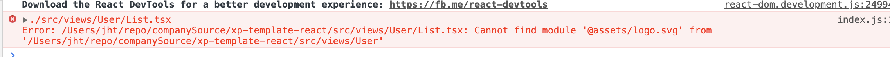
出现这个问题的原因，可能在于 babel-loader 的 plugin 那里，之前我有提到过 babel-plugin-named-asset-import 这个插件的工作原理，有可能是 webpack 在处理 alias 之前，优先被这个插件做了处理了，即以上的代码会被转换成
import Logo from 'svgr/webpack?-svgo,+titleProp,+ref!@assets/logo.svg' |
这个时候 svgr/webpack 这个 loader 自然就找不到路径为 @assets/logo.svg 的这个模块，于是编译就会报错了。
所以更好的方式？
由以上的方式，我们就懂得了一个道理，最 easy 的方式，有的时候往往也是最 hard 的。且不说上面的 svg 引入的问题没有得到完美的解决，要是以后项目逐渐的变得复杂了，需要对项目的基建做修改和升级呢？出了问题之后要怎么维护呢？连现在这个简单的问题的解决方案都如此麻烦的情况下，那万一以后出了更加匪夷所思的问题需要将项目基建整体重构呢? …etc
基于以上的风险考虑，从项目的可读性和可维护性着想的话，也许最好的方式，就是自己手撸一个 template 出来
重构 config
进行重构的操作之前，可以先将依赖包进行删除(包括 package.json 中的)，然后执行如下安装基础包
# 安装 typesript |
然后需要做的就是删除 config 文件夹下的各种 js 文件，然后新建几个文件
# config |
从整体上看，webpack.config.js 的配置文件只有寥寥几行
const { resolve } = require('./utils') |
结构非常清晰了，相信大家应该都对这个配置挺熟悉了，所以下面就重点来详细说说这几个文件
utils.js
源码如下
/** |
因为这里是用 node 启动的，所以我们可以将其当成一个 commonjs 模块，exports.resolve 表示暴露出一个叫 resolve 的模块给外部，里面的逻辑就是将一个 dir 的名字拼凑成上级目录并返回。因为很多地方会用到，所以这里封装成一个模块比较好
jsRules.js
源码如下
/** |
为什么不使用 ts-loader 以及 awesome-typescript-loader? 是因为 babel 的编译速度更快
styleRules.js
源码如下
/** |
这里需要注意的是，如果不做特殊的设置，webpack 的调用 loader 的顺序是从右往左的，即对于上面的支持 sass 的 loader 来说，它的执行顺序如下
- sass-loader: 将 sass|scss 文件编译成 css
- css-loader: 将 css 转化为 commonjs 模块，比如 css 中有
url(./xxx)的将其转化成require(./xxx) - css-modules-typescript-loader: 在编写或改动了scss文件后，这个插件会自动生成 xxx.scss.d.ts 文件
- style-loader: 将经过 css-loader 转化成的 js 字符串转化成 style 的内容然后挂在 dom 上
为什么需要 css-modules-typescript-loader 这个 loader 呢，因为对于 react 来说，我们一般通过这种方式使用一个 css 文件的类
// index.tsx |
这个时候不做设置，index.tsx 文件会报错说找不到这个 index.scss 模块。这是因为 ts 不认识这个 index.scss 文件，这个时候就需要加 .d.ts 写对应的类型文件才行(毕竟是 ts 的项目。。。)
可以自己在 src/types 目录下新建这个文件，然后写上
declare module '*.scss' { |
这个时候就可以了，当然我们可以想，不可能每个 scss 文件都这样做，能不能做的自动化一点，可以的，就使用 css-modules-typescript-loader 这个 loader 来帮我们做事情
那么这里做的 css-module 有什么好处呢？就是 react 中的 css 的模块化，local 表示 类名，[hash:base64:10] 表示这是一串由 base64 码生成的 hash，并且这个码的长度有 10 位。那么在浏览器上对应的 dom 上就会生成对应的类，这个对应的类下就有对应的 css 了，就形成来 css 的模块化，也就是自行隔离
xxx_1oiiefdai { |
fileRules.js
源码如下
/** |
这里主要是对 png 等图片格式的处理，这里注意 limit 属性配置，这个属性配置是用来指定文件的最大的 byte 也就是字节数的，若文件的大小超过定义的字节数，那么 webpack 就会使用 file-loader 去处理文件，并且所有的查询参数都会传递给 file-loader。这里在使用 url-loader 时不需要安装 file-loader，因为它本身就依赖 file-loader。name 属性配置表示最终生成的目标资源文件的路径以及名字
assetsRules.js
源码如下
/** |
终于来了！只要单纯使用这个 loader，便可以解决上文中提到的本地以组件方式引入 svg 的问题！没有其他任何的幺蛾子！非常简单的配置!!!(这里当然也顺便解决了 alias 引入的问题)
pluginsConfig.js
源码如下
/** |
html-webpack-plugin 一个耳熟能详的插件了，本质上的作用就是将生成的 js 生成 script 标签并且注入到模板页面的 body 中
当然在这个文件中统一做插件的处理，这样就能够方便的管理配置
resolveConfig.js
源码如下
/** |
这个文件的配置也很简单，基本就是配置了下 extensions 以及 alias 属性，都是为了方便写代码做的配置。不过这里需要注意的是，对于 extensions 配置，如果引入的是同名的文件，比如在某个文件夹下有两个文件 xxx.js、xxx.jsx，你这边做引入了 import xxx from 'xxx'，那么这个时候 webpack 就会采用你 extensions 中配置的第一个后缀名，剩下的不要，也就是说你最终引入的就是 xxx.js
devServerConfig.js
源码如下
/** |
注释都写的很清楚了，其实都是些基本的配置
devServerProxyConfig.js
源码如下
/** |
代理配置，跟之前 vue.config.js 中的代理配置很像的，上面第一个代理配置表示 请求 /xhb_api/users/xxx 类似的接口时，请求本来会被代理到 https://demo.xxx.cn/xhb_api/user/xxx 这个上面来，但是因为你写了 pathRewrite，中间的 /xhb_api 会被替换成 /api，也就是说最终的代理地址为 https://demo.xxx.cn/api/user/xxx
微小的总结
至此为止，一个基本的基于 react 以及 typescript 的项目就搭建完成了，后续的部分就是对模板进行些许优化的步骤了。不过总体来看，比之前使用 cra eject 的配置清爽了不少，并且由于配置的模块化(而不是函数嵌套似的模块化)，也使得项目本身易于阅读和拓展
优化配置
构建加速与构建缓存
首先需要安装两个 loader
yarn add -D cache-loader thread-loader |
一般使用 cache-loader 构建缓存，用 thread-loader 构建加速。首先创建 config/loaders.js 文件。然后源码如下所示
* @description 这个文件是为了设置构建缓存和构建加速用的 |
构建缓存的原理就是在本地有一个 .cache-loader 的文件夹，所有的需要缓存的玩意儿都放在这个里面，这样每次构建的时候若变化不大就直接取缓存里面的东西输出，可以加快构建的速度。而构建加速就是开启多线程编译。
因为平常在编译时，需要编译的主要是 js 以及 css 文件，所以应当在 jsRules 以及 styleRules 里引入
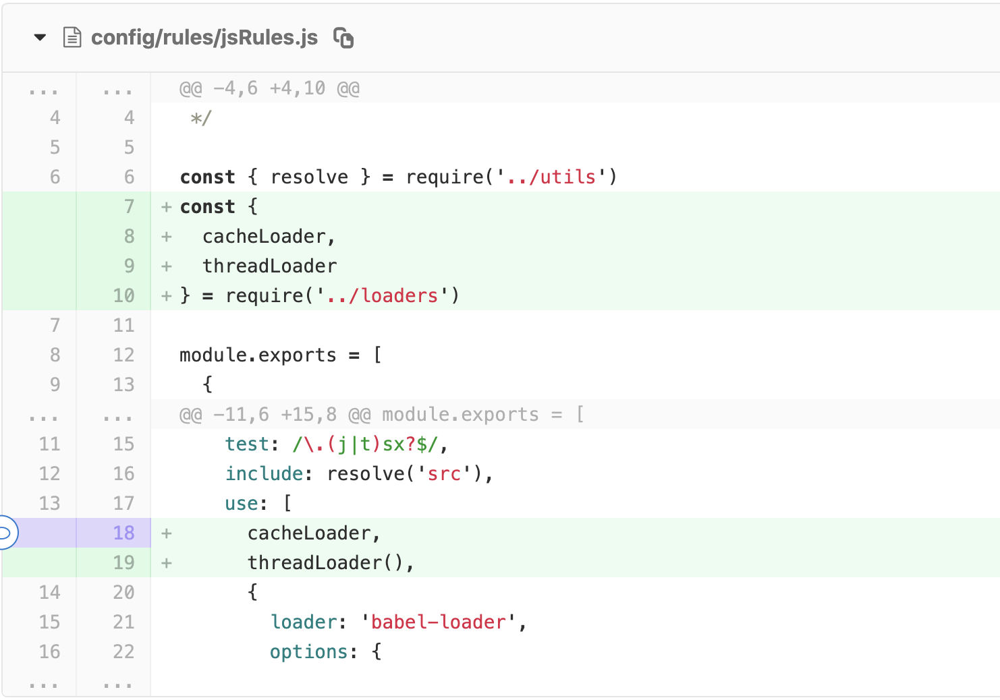
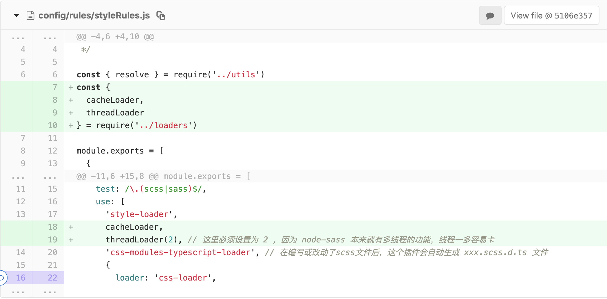
这里 less-loader 就没有用到 thread-loader 了，因为会报错
优化打包和抽离 css
优化打包方面主要用到了两个插件
yarn add -D terser-webpack-plugin optimize-css-assets-webpack-plugin |
- terser-webpack-plugin 是用来优化 js 的压缩过程的，这里没有用到
webpack.optimize.UglifyJsPlugin的原因是该插件不支持 es6 语法，为了方便就直接使用它了 - optimize-css-assets-webpack-plugin 是用来优化 css 的压缩过程的
再加上 webpack 本身有对代码分割的 optimization 配置，那么一个优化配置文件 config/optimizationConfig.js 的源码就是如下
/** |
css 文件若是都堆积在一坨也会变的很大，所以需要 mini-css-extract-plugin 来对 css 进行抽离
yarn add -D mini-css-extract-plugin |
在 config/pluginsConfig.js 中加上这个插件配置
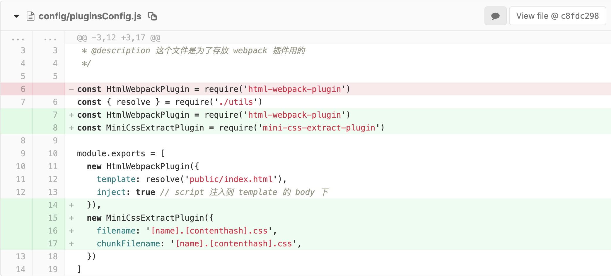
然后在 styleRules.js 中加上这个 MiniCssExtractPluginLoader（是的，本身这个插件是包含一个 loader 和一个 plugin 的）
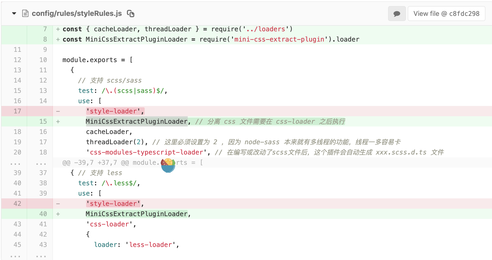
这里为啥要对 style-loader 做一个替换呢，因为我们知道在 style-loader 是在页面上添加一个 style 节点的，而分离 css 的步骤应该发生在 css-loader 之后，所以需要做一个替换(也就是说 minicss extract 这个插件内部帮我们做了 style-loader 的事情)
这里需要注意几个 hash 值所表达的意思
- hash: hash 和整个项目的配置有关，只要项目中有代码改变，那么所有打包出来的 hash 值都会变，并且所有文件共用一个 hash 值
- chunkhash: chunkhash 和 hash 不同点在于，它根据入口文件进行依赖文件解析，然后构建对应的 hash 值，也就是每个打包出来的文件 hash 值都是不一样的，每次修改代码时候，他会根据依赖关系自动修改相关模块的 hash 值，但是打包出来对应的 js 和 css 文件的 hash 会相同。
- contenthash: 在打包代码的时候，一般会将 css 文件分离出来，然后我们通常会在组件中引入 css 文件，这时候如果使用的是 chunkhash，在只修改组件 js 代码的情况下因为对应的 css 文件的 hash 值相同，打包出来的 css 文件的 hash 值也会跟着变，这时候就可以使用 contenthash了，他会针对每个文件的内容来计算 hash 值
将 config.json 拷贝到 dist 目录
这个很简单，只需要装一个插件 copy-webpack-plugin
yarn add -D copy-webpack-plugin |
然后在 config/pluginsConfig.js 中配置这个插件
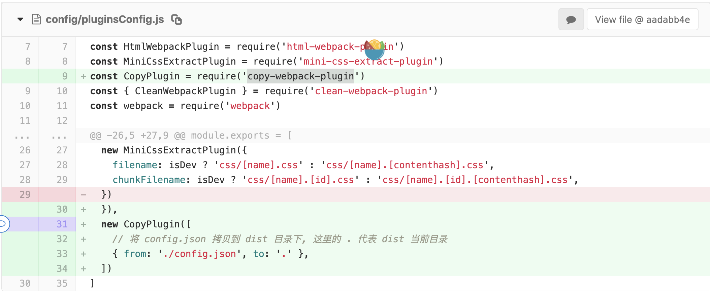
支持在代码中使用环境变量
可以使用 dotenv-webpack 这个插件
yarn add -D dotenv-webpack |
然后在 config/pluginsConfig.js 中引入这个插件
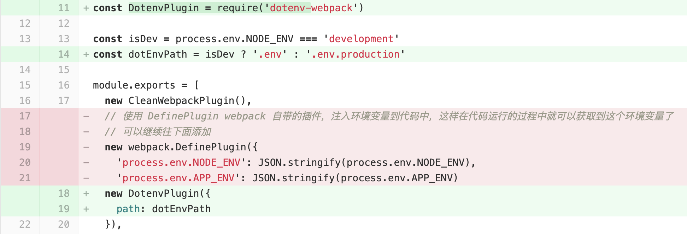
path 属性表示引入的是哪个文件
支持 px 向 vw 的单位转换
这个配置是直接从 xp 的项目拷贝过来的，即 postcss.config.js
module.exports = { |
但是这里需要安装两个东西
yarn add -D postcss-loader postcss-px-to-viewport |
因为是对 css 做一个预处理，所以应该是在 sass-loader 转换为 css 之后应该执行这个 loader，所以直接在 sass-loader 后添加这个 loader 即可
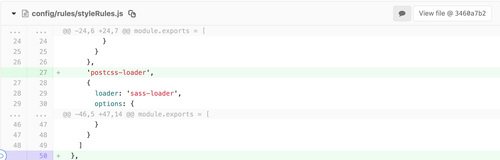
提交自动检查 commit
在 pre-commit 之前要能够自动检查代码以及 commit，首先需要安装 husky
yarn add -D husky |
然后在 package.json 中做配置
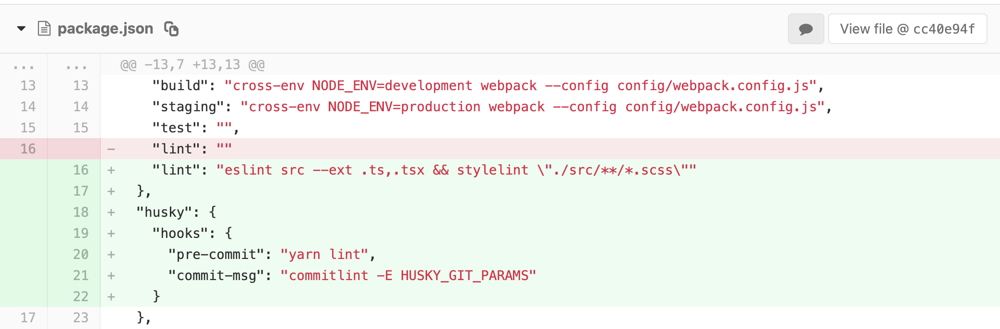
要规范 commit 提交，就必须安装如下的库
yarn add -D @commitlint/cli @commitlint/config-conventional |
然后新建一个 commitlint.config.js，自定义 commit 提交规则
// commitlint.config.js |
这样每次提交时都会先检查代码，然后再检查提交，提交的规则可以参考
总结
以上基本就是搭建模板中踩过的坑以及一系列的搭建步骤了，总的来说，还是手撸一遍项目比较香，不仅比当初的 cra eject 项目简单，而且也更利于后续人员的优化和配置